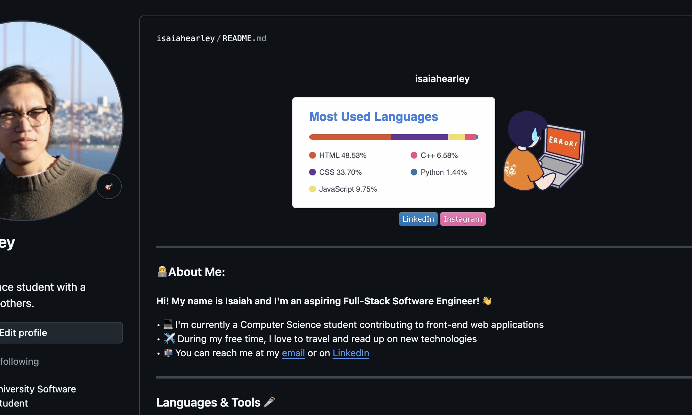

Memo
Hi 👋, I'm Isaiah Earley!
I was deeply inspired to create this project after finishing the book Atomic Habits. This book has impacted me in such a profound way that I decided to create an app on the premise of building a habit. While the app has recently came into fruition I hope that it can impact others to develop a habit by planning their week even if it takes a minute to do.
Many productivity tools that I've used, such as Notion, suffer from having hidden complexities that can overwhelm people and detract individuals from staying consistent with a habit. This app is built to solve this with keeping simplicity at the forefront making it intuitive for (hopefully) the majority of users.
Unlike other scheduling tools, Habitual supports structured productivity styles that can help reduce procrastination. Whether you like to plan for days ahead on a Sunday or add tasks on the spot, the app can help develop a healthy habit.
If you enjoy the app or would like to leave a suggestion please reach out to bbsian.135@gmail.com to provide feedback.
Reach out to me on GitHub:
Visit My GitHub Profile 